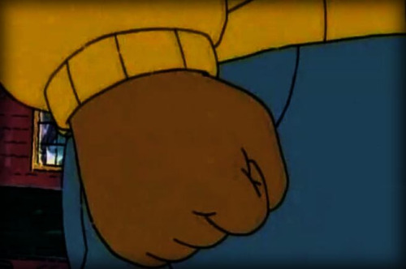

A close friend sending and recieving images of a famous black body dancing.
A close friend sending black people twitter screengrabs over whatsapp.
A guardian article announcing black lives matters protests in manchester, london, elsewhere.
I listen to a zero books podcast where the host, douglas lane, and another white man moralise campus protests and no platforming. I repeat parts of it to my brother. I am confused by my complicity to a conservative leftist political philosphy. 'Continental' Freedoms. I say to my friend later that the left needs guns.
Beyoncé holds a drink and sways at a low frame rate. She has friends, swaying in the background. They appear to be in a small room, a toilet maybe. Beyoncé smiles as she sways. The smile is light and inviting - it signals calm contentedness, being a little drunk, being protected, existing as a black body. I dont know what my friend means when he sends it.
I watch O.J. Simpson: Made in America.
I watch Lemonade.
Larry Wilmore is cancelled half way through his second season. Trevor Noah is now the only black late host.
An actor that I didnt think was that great makes an impassioned protest speach at the BET awards.
The black people twitter screengrabs make me uncomfortable. They feel like surveillance, candid camera, blacks say the darndest things handshake racism. I dont mention it. They make me laugh sometimes. I say lol unenthusiastically, hoping he wont post more.
I took a screenshot of Geordie LaForge wearing a victorian suit on the holodeck. He looks distinguished, ludicrous, cool. Geordie's visor allows him to see extra spectrums of light, chemical compositions, heat and other things as an episodes plot might require. The visor also causes him constant pain. In one episode, Geordie is given the opportunity to be free of the pain. He refuses.
Later, in the final episode, the visor is gone. Not much is said about it. He just got better? Didn't have to feel pain anymore?
I dont watch the videos.

I wonder what my friend means when he sends the gif. I think he means that he is beyoncé, his meaning (the content of the message)is to be beyoncé as a reaction.
The form of the message is a haunted image of beyoncé, a gif.
A reaction gif is a joke that displaces the reality of the premise for a chaotic anti-linguistics.
I think about my friend being beyoncé. I think of a transformation of his sexuality and his body - black, southern, christian, married. I think of him being beyoncé and smiling and swaying and drinking with friends. I think of the freedoms he would exchange for the freedom of her smile, his Continental Freedom for her Colonial Freedom.
But I cant think the occupation of a black body, so I cant reply.